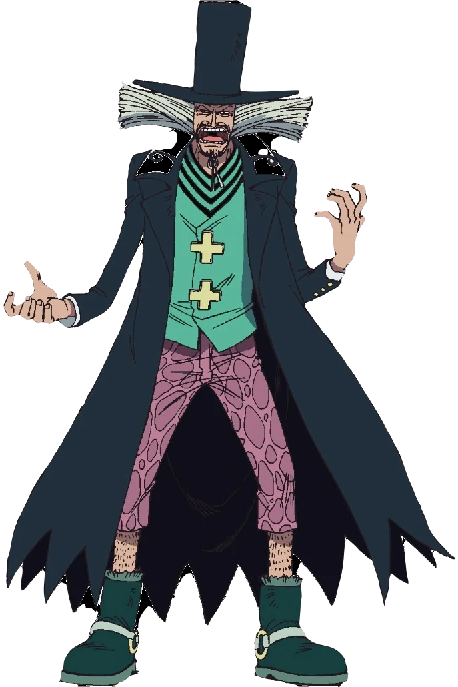
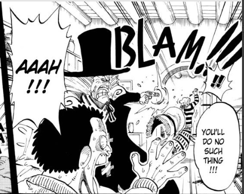

Aparência de Dr. Hiriluk
Ele vestia calças rasgadas rosadas e um casaco preta em cima de uma
camisa verde. Por cima de seu bizarro cabelo branco espetado, ele
vestia um chapéu preto que combinava com o casaco preto. Ele tinha um
longo cabelo cinza em três pontos, um para cada direção e um para
cima, a qual era coberto por seu chapéu. Ele também tinha um
cavanhaque preto e bigode.
|

|

|